Result
In this section, we present the results of our U-Net and Basic Filtering methods working with four different noise types. The noise types are (1) people chattering, (2) air conditioning, (3) people chattering & air conditioning, and (4) people reading
Noise #1: People Chattering
People chattering was actually the first noise we worked with. For that noise, used the online repository
https://depositonce.tu-berlin.de/items/aa9f01e1-3eb7-44f9-a5c8-fe1b4c858024
For training & validating the U-Net, we used instrumental files from the online repo
https://magenta.withgoogle.com/datasets/cocochorales
Here is an example clean audio track from the online repository used.
string_track002025 (clean)
Here is a random segment of that file noised by the people chattering sound.
string_track002025 (noised)
Here is that file denoised using our U-Net deep learning algorithm.
string_track002025 (denoised by U-Net)
Below is the same noisy clip denoised by our basic filtering pipeline for comparison.
string_track002025 (denoised by Basic Filtering)
We compared both denoised version against the noisy string2025 audio files. And here are the results.
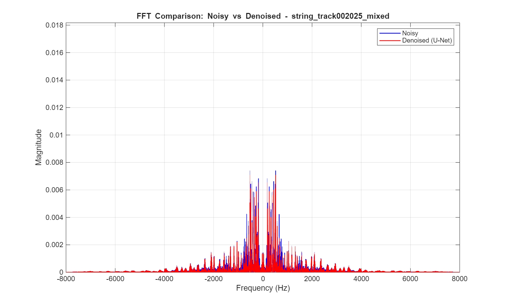
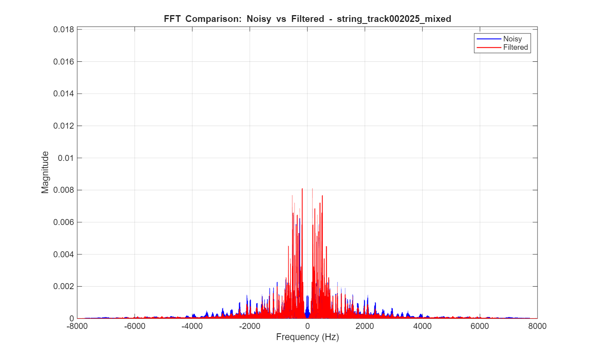
The comparisons show that for U-Net denoising, it kept more frequencies and denoised mostly the low frequencies, which corresponds to our people chattering noise. For the filtered version, the effect was not profound as observed from the specturm. Also, some filtered spikes even surpassed the old noisy spikes.
To the listener, the U-Net output really has no observable noise in it. The filtered version still has a lot of noticable noise, and the output audio also feels corrupted. The listener can hear a 'static' sound that is heard on radios.
We were also insterested on how our models would perform on self-recorded clips, like this clip of a Chinese Guzheng. Here is an audio file of the Guzheng and people talking in the background.
Guzheng1 (noisy)
And here is that file denoised by our U-Net.
Guzheng1_ckpSAM (denoised by U-Net)
We also denoised the same Guzheng recording using our basic filtering pipeline.
Guzheng1_filtered (denoised by Basic Filtering)
For self recorded clips, we also compared both denoised versions against the noisy Guzheng1 audio files
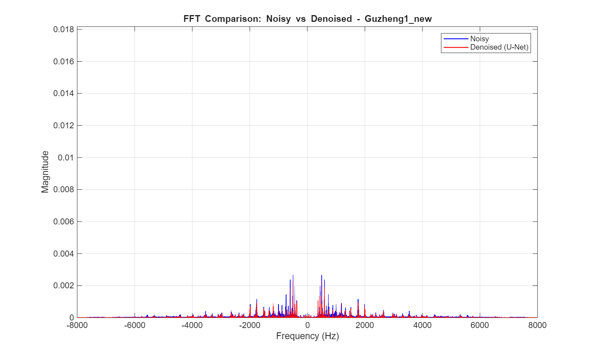
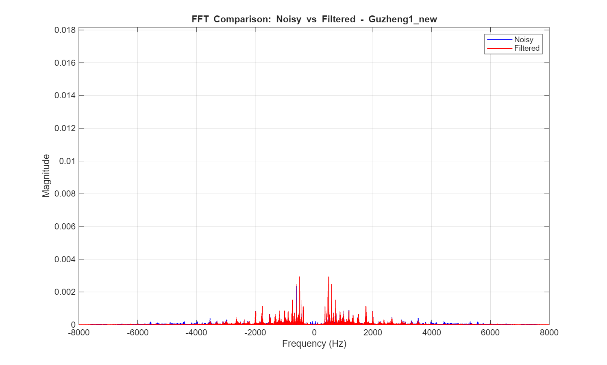
The comparison here shows similar results as string2025. The U-Net version did better in attenuating spikes in the lower frequencies. The filtered version still has spikes surpassed the old noisy spikes.
To the listener, the filtered version in this part performed much better than for the validation set recordings. The U-Net and filtered version appear pretty similar in terms of cancelling out noise in this part.
A trend we saw in the first two examples is that while the filter model attenuates the DC component (0 Hz) it doesn't attenuate the lower frequencies around 0 Hz as well as our U-Net.
Noise #2: Air Conditioning
The next audio source we tackled was air conditioning. Since we couldn't find the exact air conditioning noise, here we used the auto noise to generate our training dataset. We'll start by presenting the results of an audio recording in the instrumental music validation set above.
string_track002011 (clean)
string_track002011_mixed_AC (noised with AC)
string002011_ckpAC (denoised with U-Net)
Below is the same AC-noised clip denoised by the basic filtering pipeline.
string_track002011_mixed_AC (denoised by Basic Filtering)
We compared both denoised version against the noisy string2011 with auto audio files. And here are the results.
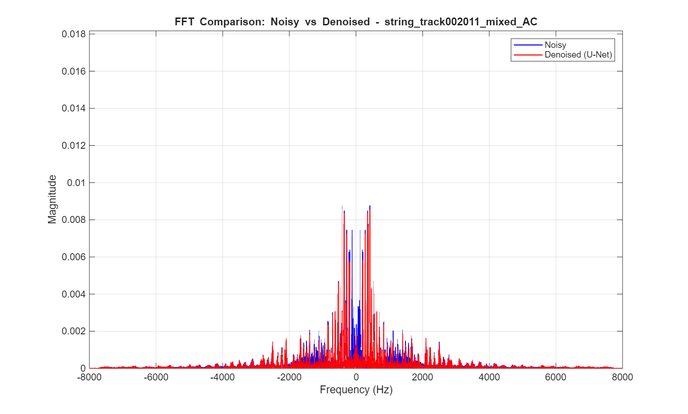
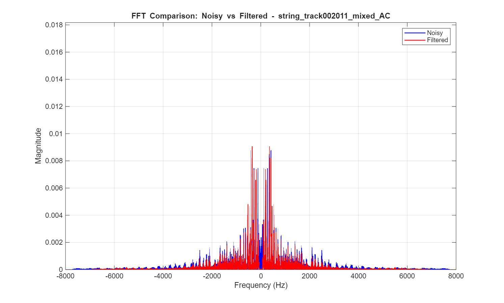
The comparisons show that for U-Net denoising, it did not take out all its DC component. It attenuated the DC component and the spikes around 1200 Hz while keeping most of the high frequencies unchanged.
For the filtering version, the DC component was taken out completely. Also, it did not attenuated the 1000 Hz to 2000 Hz range.
The U-Net works better than the filtered version.
Listening to these clips, the U-Net version appears to almost entirely cancel out the auto noise. For the filtered version, we can still hear a lot of the auto noise (like at 5 seconds) and we also get that 'static' sound that we observed earlier.
Like the last section, we also tested our models with self-recorded clips. This time, it was a clip of Ronald playing a bellset with air conditioning in the background.
Original Clip of Bellset & AC
Denoised Clip of Bellset & AC (U-Net)
Denoised Clip of Bellset & AC (Basic Filtering)
We compared both denoised version against the noisy bells audio files. And here are the results.
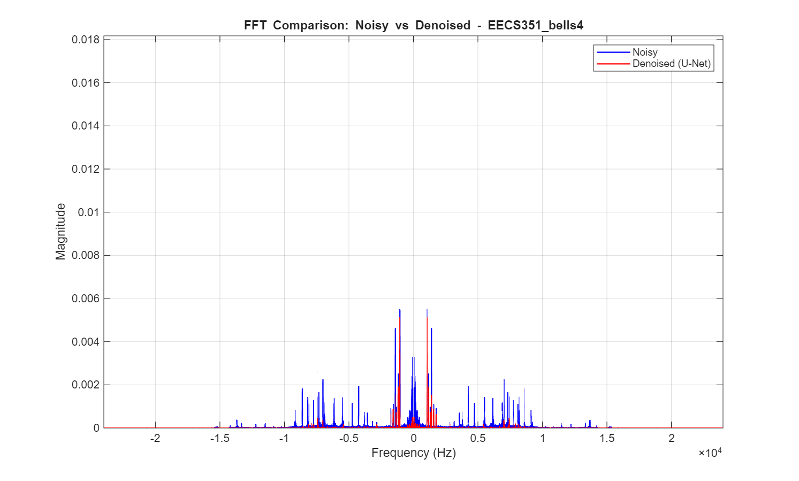
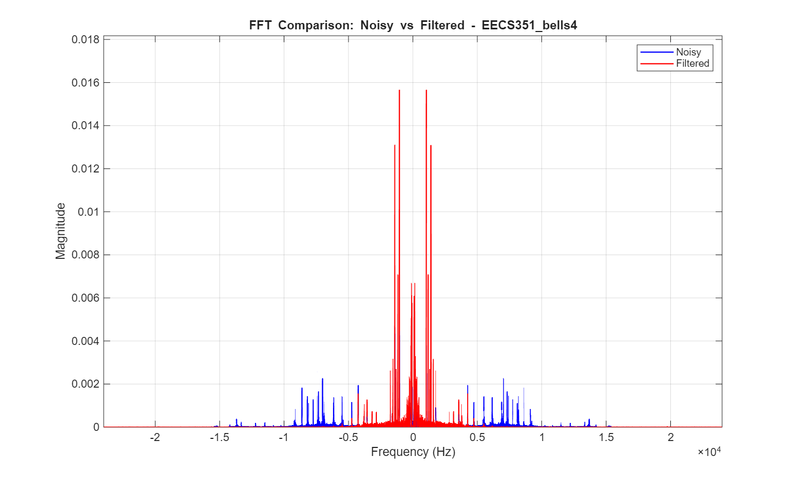
For the U-Net version, it attenuated most of the higher frequency peaks and some low 40 Hz frequency peaks. For the filtered version, it also denoised the higher frequencies but significantly increased the lower frequency peaks.
In the U-Net denoised clip, the air conditioning noise is much quieter, however the sound of the mallets hitting the keys is not as "sharp" as the original clip. We can hear some echo. The filtered clip does not seem to differ much from the original clip, as the air conditioner is still pretty significant.
Noise #3: People Chattering & Air Conditioning
What if audio files had TWO types of noise instead of just one? Could our model still work? That is what we are investigating in this section. We'll again start with string_track002011 from the validation set.
string_track002011 (clean)
string_track002011_mixed_all (both noises applied)
string_track002011ckpALL (denoised by U-Net)
We also applied the basic filtering pipeline to the same double-noise clip.
string_track002011_mixed_all (denoised by Basic Filtering)
We compared both denoised version against the noisy string2011 audio files. And here are the results.
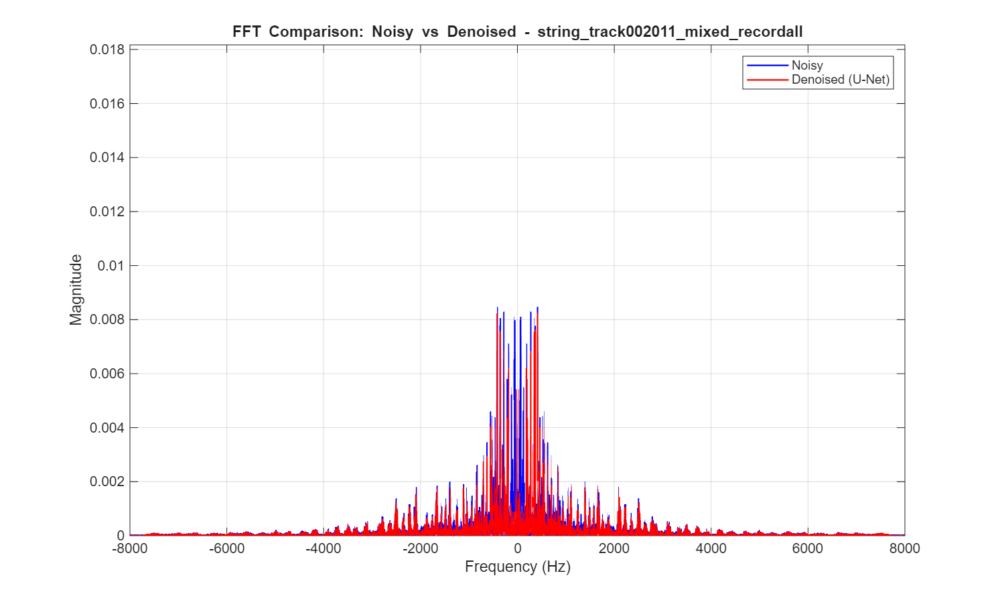
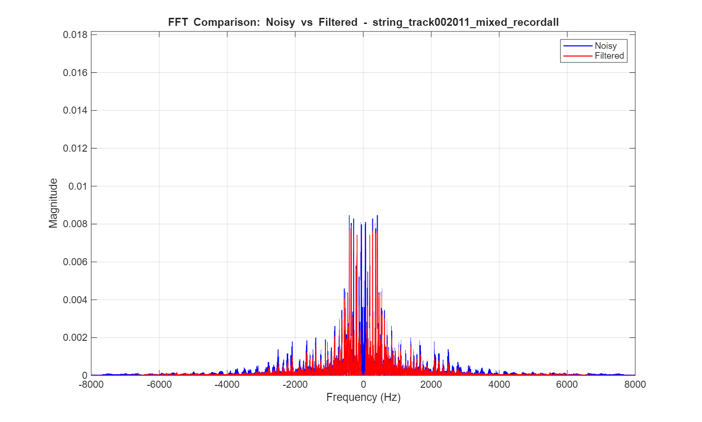
The outputting effect is similar for the filtered version and U-Net version. The only difference is that U-Net did not eliminate the DC component from the FFT perspective.
As for listening to the audios, the U-Net performed pretty well at elimiating both noises. We can hear some people chattering at the beginning, but nothing too significant. The filtered output still includes people chattering, especially at the beginning. We can also hear the auto noise in the filtered output but the people chattering sound is more significant of the two.
Noise #4: People Reading
The last noise source we explored was of someone reading in the background. This noise is recorded by ourselves (Yi speaking in the background). Could this be different from the people chattering dataset found online? We'll start with a recording from the validation set, and then move into a self-recorded example.
(Something to be noted here: Since we have limited time, we didn't record many people speaking audio files. Therefore, for the training dataset and validation dataset, we put some online people chattering noise dataset. )
string_track002018 (clean)
string_track002018_mixed_recordall (noised with people reading)
string_002018_ckpRECORDALL (denoised by U-Net)
We compared both denoised version against the noisy string2018 audio files. And here are the results.
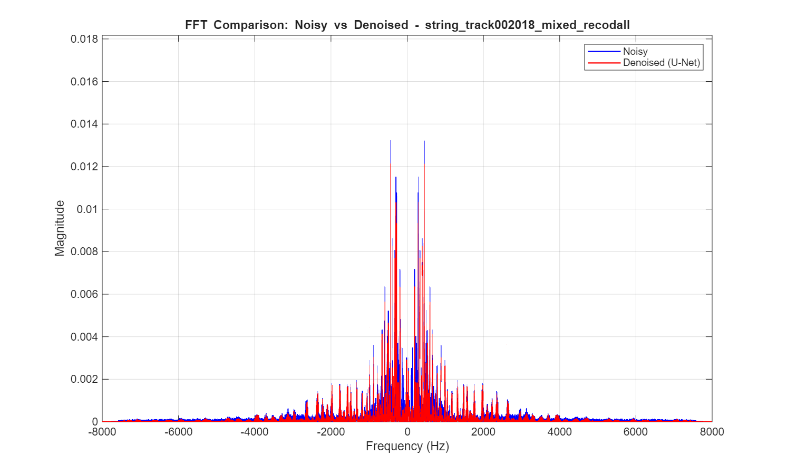
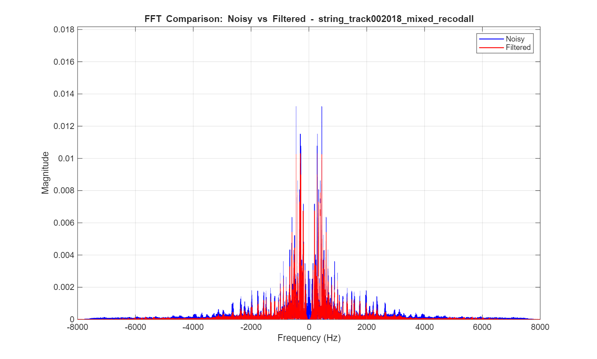
We see similar patterns in the FFT comparisons in this subsection that we do in other subsections. The filtered plot completely attenuates the DC component, while the U-Net keeps it to a lower extent. Also some of the frequencies in the 2000-4000 Hz range were attenuated more in the filtered plot than the U-Net plot. To explore the real world case, here is a self-recording of a reader and a piano player.
piano_people (piano with reader)
piano_people_denoised (denoised by U-Net)
Below is the same piano-and-reading clip processed by the basic filtering pipeline.
piano_people_filtered (denoised by Basic Filtering)
We compared both denoised version against the noisy piano audio files. And here are the results.
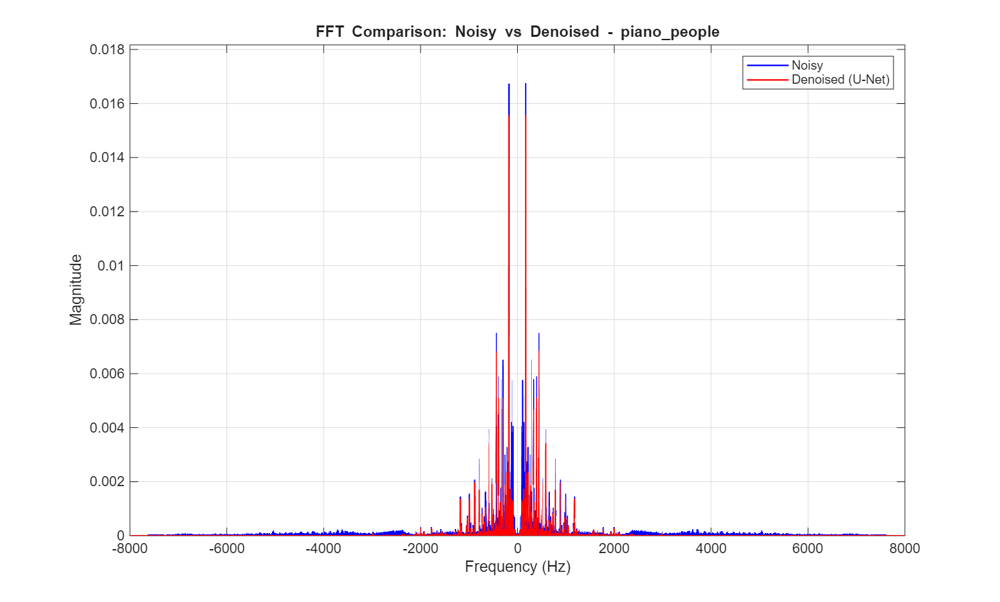
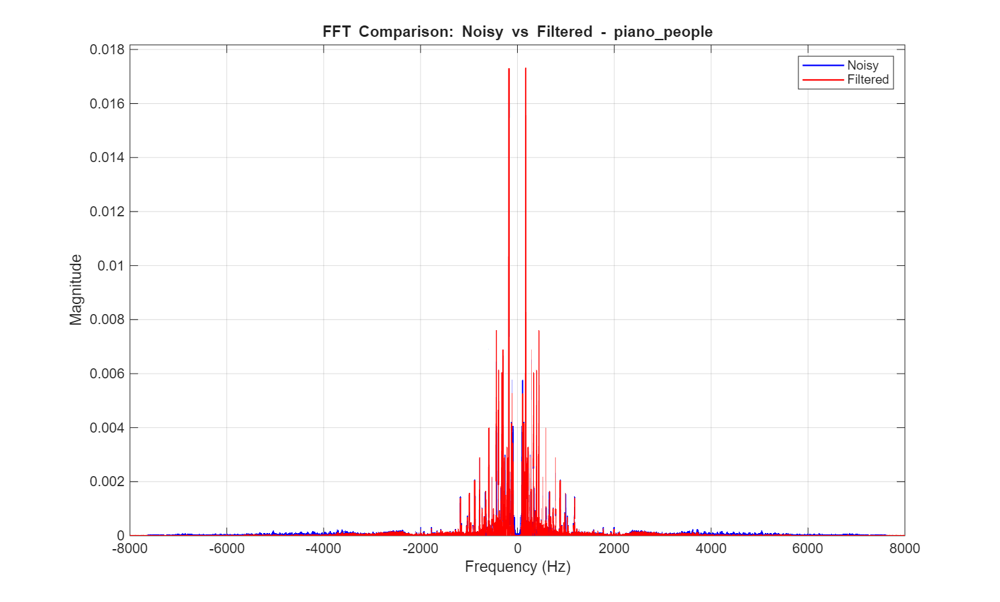
As from the specturm viewpoint, the U-Net version kepted the DC component and higher frequencies and attenuated the lower frequencies parts. The filter version muted the DC component but left much of the lower frequencies untouched.
Qualitatively, the U-Net performed very well at eliminating the speaker while keeping the piano. The speaker can still be heard in the filtered version, but it is slightly quieter.
Key Takeaways
Our group learned a lot from this project, and from the results in this section. One of the main trends in our results is that denoising using the U-Net algorithm is more effective than using basic filtering. For most of the clips in our validation set, U-Net did an admirable job, removing most of the desired noise. However, in some of the self-recorded clips (like in subsection 2 with Bells & AC), U-Net did not do as well. And that's why we explored Noise #4 to see if real recorded noise work better on real world dataset.
Some ideas our group has is that U-Net method works well with the noises that it used to train. For those that didn't work well, the noise sources used during training is not the same as noise sources in 'real life', taking place in the self-recordings. It also could be possible that our training clips were too similar to each other, making our U-Net less effective in the general case. For future exploration, more general noises can be added to the training set to make the model more generalized. However, we are still happy with the results.